Nodeberget is a spacious holiday home of approximately 240 m² — with plenty of room to gather, and rooms of your own to retreat to.
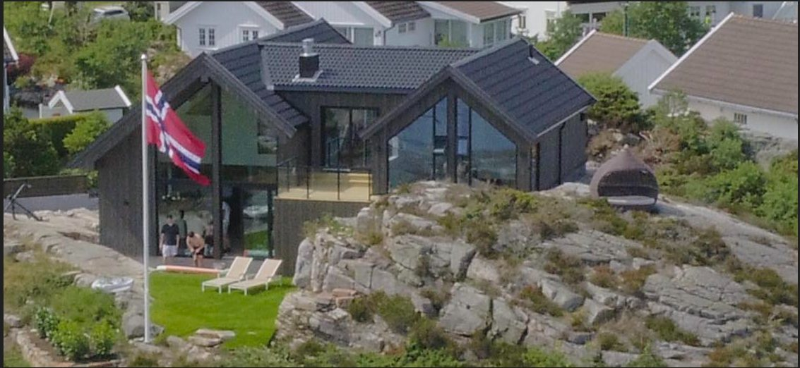
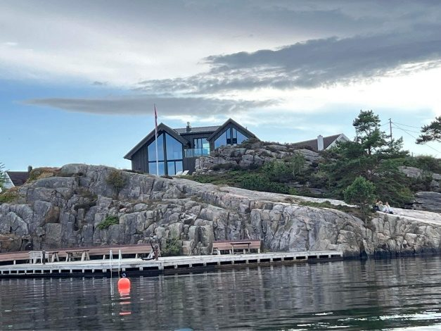
The house is built on Nodeberget, which is considered a historical landmark in Skålvik on the idyllic Flekkerøya, just outside Kristiansand. The modern building, built in 2024, is located on a hill with panoramic views of the sea where you can see the boat connection to Kristiansand City. There is a driveway right to the house, with 2 parking spaces and a boat mooring. It is a short walk to the shop on Flekkerøya (which you pass on the way to the house), and about 15 minutes' drive to Kristiansand City centre.
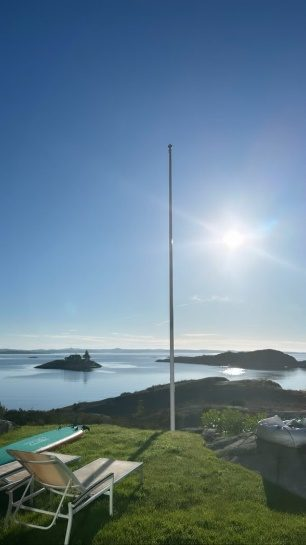
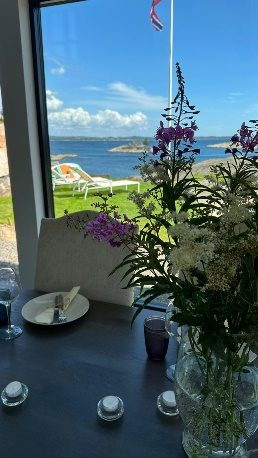
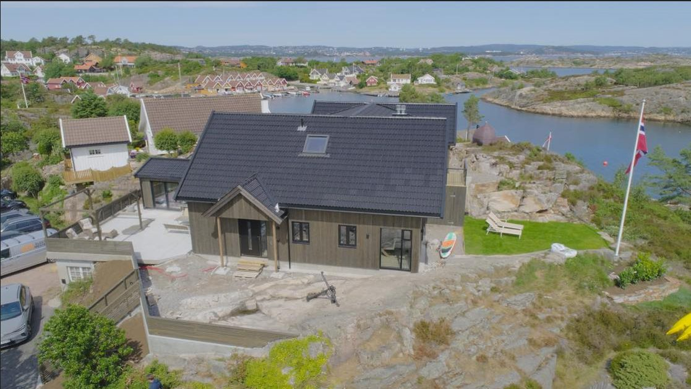
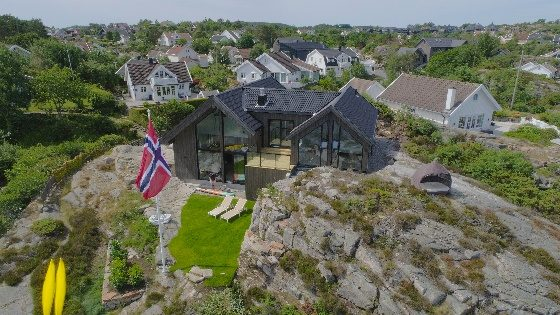
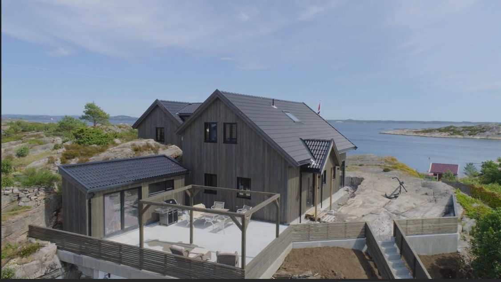
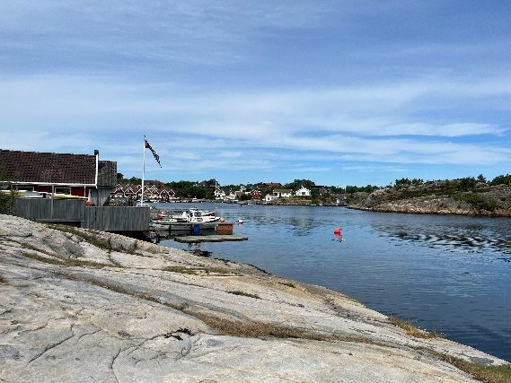
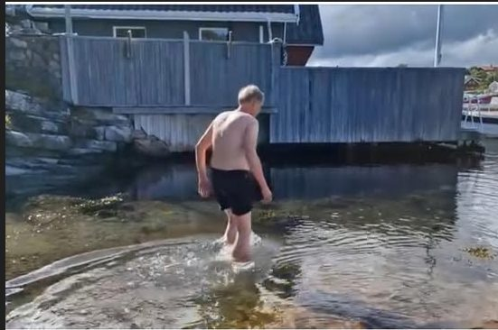
There is a great swimming spot 40 meters from the house. With its beautiful rocky shores, the swimming spot is the perfect place to enjoy hot summer days and take a refreshing swim for both children and adults.
There is a natural staircase up from the sea as you plunge into the fresh water, and a nice, small beach for small children.
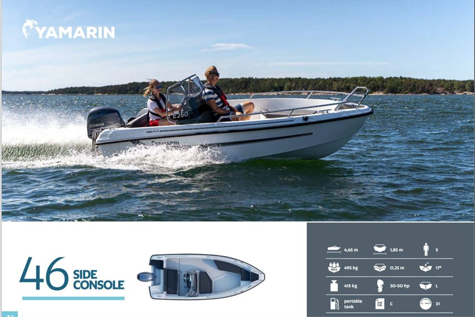
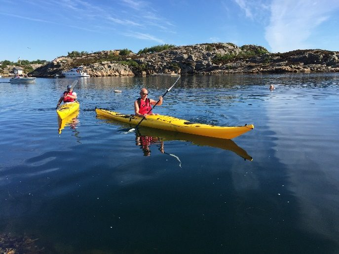
There is a lot of fish around Flekkerøya, especially mackerel, cod, saithe and plaice. You can fish both from land or from a boat. Complete fishing equipment is available in the house.
The holiday home has its own boat mooring. Please contact us if you would like to rent a boat.
There are also excellent conditions for kayaking – there are two kayaks for rent.
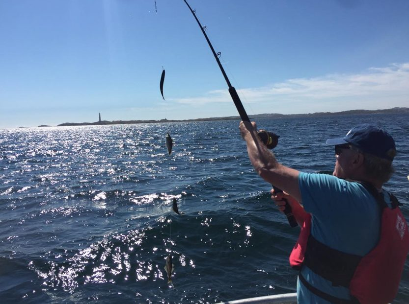
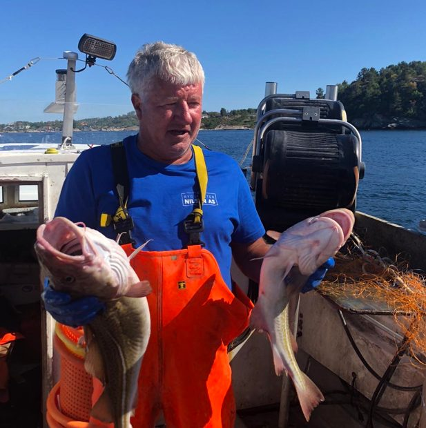
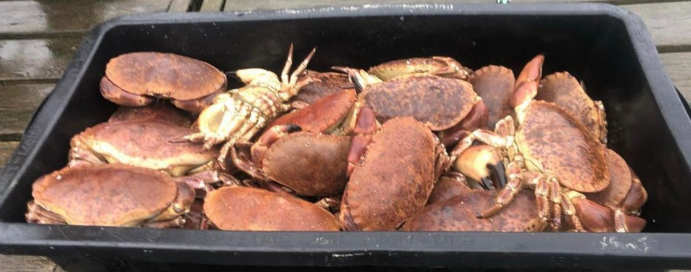
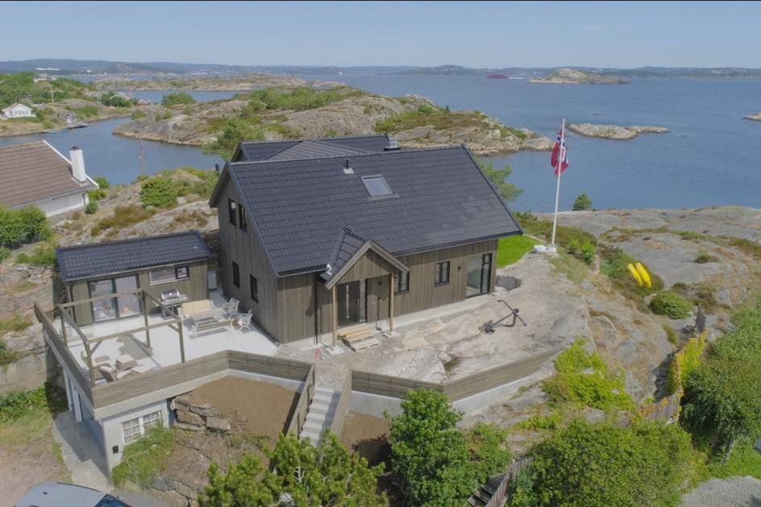
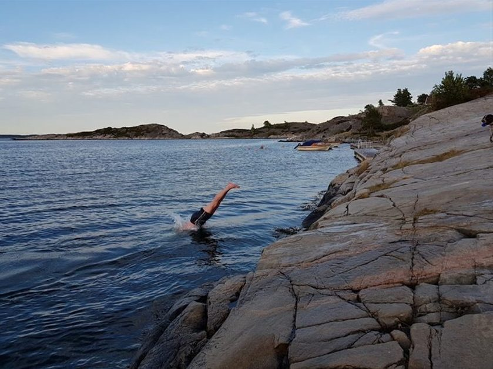
Around the house there are beautiful outdoor areas, with unique sea views. There is access to good, sunny seating areas, with a pergola and gas fireplace for outdoor grilling, beautiful terraces and lawn. There are also two outdoor sheds attached to the house.
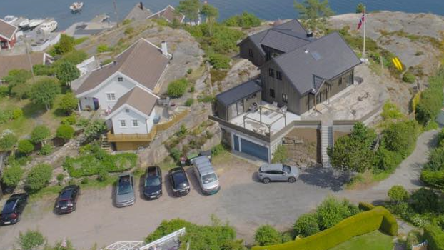
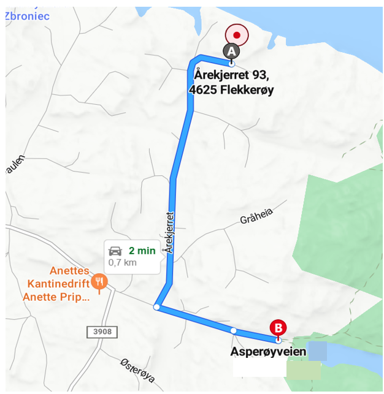
The holiday home has 2 parking spaces in a private parking lot right next door. Park as close to the stairs to the holiday home as possible. One parking space has an electric car charging station.
It is also possible to park more cars than the 2 in the parking lot, see directions for other parking lots – these are located about 700 meters away, near Asperøyveien.
See the holiday home room by room – from the entrance area and living room to the four bedrooms.
Room by Room